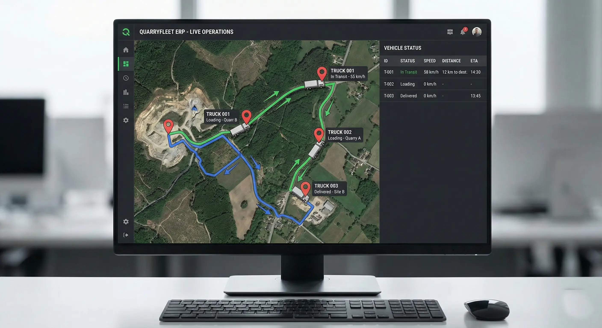

Optimizing Quarry Profitability via Automated Theft Prevention
This case study highlights how Sazs ERP transformed security and operational integrity for a leading crusher and quarry business. By replacing vulnerable manual processes with advanced digital oversight, the company eliminated systemic leaks and secured its bottom line.
Manual Vulnerabilities and Material Loss
Quarry owners often struggle with material theft and unaccounted stock movements that directly erode profits. In this case, the reliance on manual registers and delayed data entry created a high-risk environment.

The operation faced frequent unauthorized vehicle dispatches and the manipulation of weighbridge slips, making it nearly impossible to maintain accurate inventory or stop intentional malpractice.
Automated Weighment and GPS Integration
To combat these leaks, Sazs ERP for Crusher & Quarry implemented a robust, centralized security framework. A core component of the solution was automated weighbridge integration, designed specifically to avoid manual errors and prevent malpractice.


By pulling weight data directly from the scales into the ERP, the system removed the human element from the recording process, ensuring that every slip was accurate and tamper-proof.
The comprehensive solution included:
- Real-Time Tracking: Instant digital recording of vehicle entry and exit.
- GPS Monitoring: End-to-end trip tracking to ensure material reaches its destination.
- Role-Based Security: Restricted access to sensitive data, ensuring that only authorized personnel could oversee dispatch logs.
- Digital Verification: Every load was time-stamped and verified within the ERP, creating a transparent audit trail.
Manual vs. Automated Quarry Operations
To illustrate the impact of Sazs ERP, here is a comparison between traditional manual operations and the automated, integrated environment.
| Feature | Manual Operations (Before) | Sazs ERP (After) |
|---|---|---|
| Data Integrity | Prone to manual error and intentional manipulation. | Tamper-proof; data flows directly from equipment to ERP. |
| Weighbridge Process | Slips can be overwritten or falsified by operators. | Automated Integration captures weight without human input. |
| Vehicle Tracking | Limited to manual gate registers; easy to bypass. | GPS & RFID tracking ensure 100% visibility of all movements. |
| Dispatches | High risk of unauthorized material leaving the site. | Zero unauthorized dispatches; system validates every load. |
| Stock Accuracy | 85–90% accuracy; frequent reconciliation disputes. | 98–99% accuracy; real-time stock sync. |
| Processing Time | 10–15 minutes per truck (manual logs & slips). | Under 2 minutes with automated weighing & gate control. |

Key Benefits of Weighment Integration
By removing the "human element" from the scales, the system addresses the two biggest threats to quarry profitability:

Eliminating Malpractice: Since the weight is captured digitally from the load cells and pushed directly to the ERP, operators cannot "under-report" weights to facilitate theft or favor specific buyers.
Avoiding Manual Error: It eliminates "fat-finger" mistakes where incorrect digits are typed into a register, ensuring that your billing and inventory are always perfectly aligned with the physical material moved.
Enhanced Security and Rapid ROI
The shift to a digital-first approach yielded immediate and measurable improvements. Within just three months, the quarry achieved a 95% reduction in material theft and reached a milestone of zero unauthorized dispatches.

By eliminating quarry material loss through automated weighment, the company secured accurate stock reconciliation and significantly boosted its profit margins.